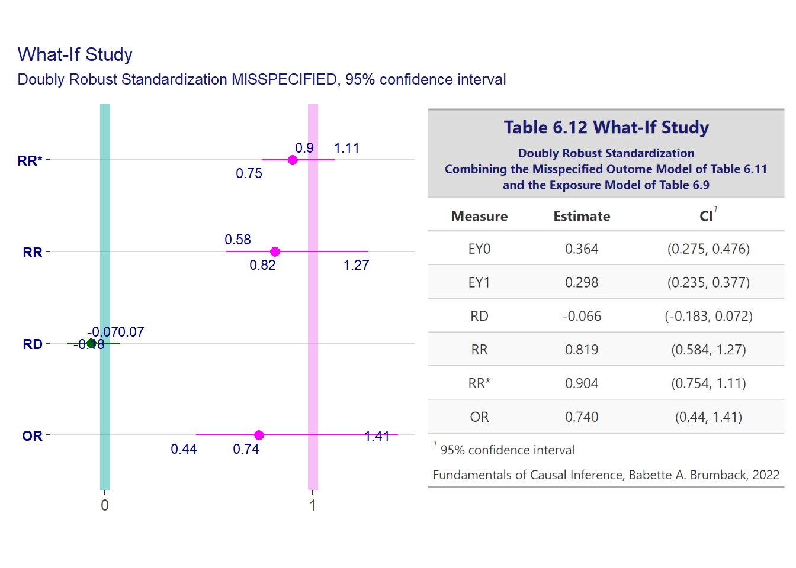

[conflicted] Will prefer dplyr::filter over any other package.
Important note on the notation used. When the author uses \(E(Y=t) \mid T=t, H=h)\) it means that we condition the data on \(H=h\) and we intervene on the \(T\) column and set it to \(T=t\).
which indicates that \(T=t\) means that we set \(T=t\), i.e. it is not a condition that doesn’t involve a filter on the data. We know that because we have the \(E(Y(t))\) which tells us that.
But then we continue with proof (6.2) by adding the thrd line
and, for the unwary beginner, \(E(Y \mid T = t, H)\) could mean that we are conditioning on \(T=t\), that is, we filter the \(T\) variable in the data. This is confusing.
To facilitate the reading and learning experience in this study project, whenever such confusion happens, the notation fro Pearl, using the \(do()\) operator will be used.
For example, the proof (6.2) becomes
\[
\begin{align*}
E(Y(t)) &= E_H(E(Y(t) \mid H)) \\
&= E_H(E(Y(t) \mid T = t, H)) \\
&\text{and we use the do() operator to make it clear} \\
&\text{that T=t is not a condition, it is an intervention} \\
&\text{whereas H is a condition} \\
&= E_H(E(Y \mid do(T = t), H))
\end{align*}
\]
6.1 Standardization via Outome Modeling
Standardization vis via outcome modelingis one way to estimate \(E(Y(t))\)
# A tibble: 2 × 2
T EYout
<dbl> <dbl>
1 0 0.00784
2 1 0.00700
Now, lets do it with raw data. For that we convert the mortality data to have 1 line per 10000 observations.
mort <- mortality |>select(H, `T`, Y, n) |>mutate(n =as.integer(n /10000)) |> tidyr::uncount(n)
and the function used to automate the process described above is as follows
func_out_np <-function(data, formula, exposure.name, confound.names) {# the name of the outcome variable outcome.name <-all.vars(rlang::f_lhs(formula))# compute the frequencies, this table is then used for all computations summ <- data |>count(.data[[outcome.name]], .data[[exposure.name]], .data[[confound.names]]) |>mutate(freq = n /sum(n))stopifnot(abs(sum(summ$freq) -1) < .Machine$double.eps^0.5)# the expected value of the outcome given the exposure and confounds# i.e. the outcome conditional mean out_cond_mean <- summ |>group_by(.data[[exposure.name]], .data[[confound.names]]) |>summarize(EY =weighted.mean(.data[[outcome.name]], w = n)) |># add and id column to be able to join the confounds variables laterunite(col ="id", .data[[confound.names]], remove =FALSE)# the confounds' distribution confound_dist <- summ |>group_by(.data[[confound.names]]) |>summarize(prob =sum(freq)) |># add and id column to be able to join the confounds variables laterunite(col ="id", .data[[confound.names]], remove =FALSE)# multiply the conditional expectation by the confound probabilities EY <- dplyr::inner_join(out_cond_mean, confound_dist, by ="id") |>group_by(.data[[exposure.name]]) |>summarize(EY =sum(EY * prob)) |># create the output vectorarrange(.data[[exposure.name]]) |>pull(EY) |>setNames(c("EY0", "EY1")) EY}
mort.out.est <-func_out_np(mort, formula = Y ~`T`+ H, exposure.name ="T", confound.names ="H")
Warning: Use of .data in tidyselect expressions was deprecated in tidyselect 1.2.0.
ℹ Please use `all_of(var)` (or `any_of(var)`) instead of `.data[[var]]`
mort.out.est
EY0 EY1
0.007831933 0.006969437
and we can see it gives the same results with the fciR package with fciR::backdr_out_np)
fciR::gt_measures(mort.out.np, digits =6,title ="Mortality", subtitle =paste("Standardized Estimates via Outcome Modeling","Non Parametric Without Regression",sep ="<br>"))
Table 6.1:
Standardized Estimates via Outcome Modeling. Non Parametric Without
Regression.
Mortality
Standardized Estimates via Outcome Modeling Non Parametric Without Regression
Measure
Estimate
CI1
EY0
0.007844
(0.007398, 0.008355)
EY1
0.006998
(0.00625, 0.007794)
RD
-0.000847
(-0.001679, 3.2e-05)
RR
0.891105
(0.788227, 1.004317)
RR*
0.999148
(0.99831, 1.000033)
OR
0.890345
(0.786856, 1.00435)
Fundamentals of Causal Inference, Babette A. Brumback, 2022
1 95% confidence interval
Section 6.1, p. 101, also give the function stand.r to standardize via outcome modeling. This function uses regression with a saturated model, also called non- parametric, see last paragraph of section 2.2 on p. 25 regarding the saturated model.
The stand.r is called fciR::backdr_out_sat, the suffix sat means it is with a saturated regression model. Here we show it using the tidyverse way.
func_out_sat <-function(data, formula, exposure.name, confound.names) {# this function works when there is only one confoundstopifnot(length(confound.names) ==1) x0 <-"(Intercept)"# name of intercept used by lm, glm, etc.# marginal expected value of the outcome mean_confound <-mean(data[, confound.names])# fit the outcome model fit <-glm(formula = formula, data = data) |> broom::tidy()# add distribution marginal expected potential outcomes# marginal computaiton only for terms including the confound fit <- fit |>mutate(# find the terms that includes the confoundmarg_exp =grepl(pattern = confound.names, x = term),# multiply the terms inlcuding the confoundmarg_exp =ifelse(marg_exp, estimate * mean_confound, estimate) )# E(Y(0)) EY0 <- fit |>filter(term %in%c(x0, confound.names)) |>summarize(EY =sum(marg_exp)) |>pull()# E(Y(1)) EY1 <- fit |>summarize(EY =sum(marg_exp)) |>pull()c("EY0"= EY0, "EY1"= EY1)}
Here we use it again with the mort dataset. It is important to note that the formula inlcudes all interactions since the model is saturated
mort.out <-func_out_sat(mort, formula = Y ~`T`* H, exposure.name ="T", confound.names ="H")mort.out
EY0 EY1
0.007831933 0.006969437
and we now do it with the function fciR::backdr_out_npr. That function works exactly as the function standr in the book.
and the results are the same again. In conclusion pretty much any of the function. The function fciR::backdr_out_npr seems faster. The function fciR::backdr_out_np is actually useful as a double check and it actually uses a “pure” application of probabilities.
Examples
What-if? Study
data("whatifdat", package ="fciR")
Saturated model with backdr_out_sat
whatif.out.sat <- fciR::boot_est( whatifdat, fciR::backdr_out_sat, times =500, alpha =0.05,terms =c("EY0", "EY1", "RD", "RR", "RR*", "OR"),formula = Y ~ A * H, exposure.name ="A", confound.names ="H")whatif.out.sat
The function bootstandatt described in section 6.1.1 is not really necessary in the sense that the change is so little that we can simply set the argument att = TRUE in backdr_out_sat. The less coding we do, the better off we are!
What-if? Study
See the argument att = TRUE for fciR::backdr_out_sat.
whatif.out.att.sat <- fciR::boot_est( whatifdat, fciR::backdr_out_sat, times =500, alpha =0.05,terms =c("EY0", "EY1", "RD", "RR", "RR*", "OR"),formula = Y ~ A * H, exposure.name ="A", confound.names ="H", att =TRUE)
Compute the standardized estimates using exposure modeling with fciR::backdr_exp_np which uses the algorithm defined in mk.mortdat at the beginning of section 6.2. You can see the code by pressing F2 on fciR::backdr_exp_np.
\[
\begin{align*}
&\text{by the rule of double expectation} \\
E(Y(0) \mid T=1) &= E_{H \mid T=1} E(Y \mid T=0, H) \\
&\text{by definition of expectation} \\
&= E_{H \mid T=1} \left[ \sum_{y} y P(Y=y \mid T=0, H) \right] \\
&\text{by definition of conditional expectation} \\
&= \sum_h \left[ \sum_{y} y P(Y=y \mid T=0, H) \right] P(H=h \mid T=1) \\
&\text{by definition of conditional expectation we have that} \\
&P(H=h \mid T=1) = \frac{P(T=1 \mid H=h) P(H=h)}{P(T=1)} \\
&\text{therefore} \\
E(Y(0) \mid T=1) &= \sum_{y,h} y P(Y=y \mid T=0, H=h) \frac{P(T=1 \mid H=h) P(H=h)}{P(T=1)} \\
&\text{rearranging terms} \\
&= \sum_{y,h} y \frac{P(T=1 \mid H=h)}{P(T=1)} \left[ P(Y=y \mid T=0, H=h)P(H=h) \right] \\
&\text{and multiply by } 1 = \frac{P(T=0 \mid H=h)}{P(T=0 \mid H=h)} \\
&= \sum_{y,h} y \frac{P(T=1 \mid H=h)}{P(T=1)} \left[ \frac{P(Y=y \mid T=0, H=h)P(T=0 \mid H=h)P(H=h)}{P(T=0 \mid H=h)} \right] \\
&\text{rearranging the terms again} \\
&= \sum_{y,h} y \frac{P(T=1 \mid H=h)}{P(T=1)P(T=0 \mid H=h)} \left[ P(Y=y \mid T=0, H=h)P(T=0 \mid H=h)P(H=h) \right] \\
&\text{using the multiplication rule} \\
&= \sum_{y,h} y \frac{P(T=1 \mid H=h)}{P(T=1)P(T=0 \mid H=h)} P(Y=y, T=0, H=h) \\
&\text{ and since } e(h) = P(T=1 \mid H=h) \text{ and } e_0 = P(T=1) \\
&= \sum_{y,h} y \cdot \frac{e(h)}{e_0 (1 - e(h))} \cdot P(Y=y, T=0, H=h) \\
&\text{ and since } \sum_t (1-t) P(Y=y, T=t, H=h) = P(Y=y, T=0, H=h) \\
&= \sum_{y,h} y \cdot \frac{e(h)}{e_0 (1 - e(h))} \cdot \sum_t (1-t) P(Y=y, T=t, H=h) \\
&= \sum_{y,h, t} y \cdot (1-t) \cdot \frac{e(h)}{e_0 (1 - e(h))} \cdot P(Y=y, T=t, H=h) \\
&\text{and by definition of expectation} \\
&= E \left[ Y \cdot (1-T) \cdot \frac{e(H)}{e_0 (1 - e(H))} \right]
\end{align*}
\]
To to the calculation with ATT we use backdr_exp_np but, this time, with the argument att = TRUE. When att = TRUE, backdr_exp_np gives the estimate for ATT as attsem.r on p. 116 of section 6.2.1.
message("TODO: EY1 should not be influenced by ATT??")
TODO: EY1 should not be influenced by ATT??
# TODO: EY1 should not be influenced by ATT??# stopifnot(abs(mort.att.EY0 - 0.010176) < 1e-4,# abs(mort.att.EY1 - 0.0069952) < 1e-4)
6.2.2 Standardization with a Parametric Exposure Model
The function fciR::backdr_exp() is used to standardized with a parametric exposure model and the glm fit. It is the main function used in the chapter.
Alternatively the standardization could be done with geeglm from the geepack package. For those focused primarily on the risk difference. See the explanation on section 6.2.2 on why geeglm is not really good for the risk ratio.
The function is called exp in the book. We rename it fciR::backdr_exp() to be more informative and avoid mix up with the much-used base R function exp.
df <- whatif2.exp.geetbl <- fciR::gt_measures(df, title =paste("Table 6.9", "What-If Study"), subtitle =paste("Exposure-model Standardization using <em>geeglm</em> wtih <em>H = lvlcont0</em>",sep ="<br>"))tbl
Table 6.2:
Table 6.9 using geelm
Table 6.9 What-If Study
Exposure-model Standardization using geeglm wtih H = lvlcont0
Measure
Estimate
CI1
EY0
0.363
(0.248, 0.491)
EY1
0.298
(0.229, 0.379)
RD
-0.065
(-0.187, 0.072)
RR
0.825
(0.568, 1.266)
RR*
0.904
(0.736, 1.112)
OR
0.746
(0.426, 1.403)
Fundamentals of Causal Inference, Babette A. Brumback, 2022
1 95% confidence interval
General Social Survey
The gssrcc is defined in section 6.1.2 above. It is the gss data with complete cases only.
The standexp function on page 119-120 of section 6.2.2 is not needed anymore as standexp was created with parameters in the previous section. We just need to run it as follows
The function backdr_dr() does a doubly robust standardization. It is not in the text but is actually used for the exercise. It is very similar to badstanddr.
The function badstanddr is replaced by backdr_dr_bad, used for doubly robust standardization with a misspecified outcome model.
df <- whatif2.badtbl <- fciR::gt_measures(df, title =paste("Table 6.12", "What-If Study"), subtitle =paste("Doubly Robust Standardization","Combining the Misspecified Outome Model of Table 6.11", "and the Exposure Model of Table 6.9",sep ="<br>"))p <- fciR::ggp_measures(df,title =NULL,subtitle =NULL)tbl <- fciR::gt2ggp(tbl)p + tbl +plot_annotation(title ="What-If Study",subtitle ="Doubly Robust Standardization MISSPECIFIED, 95% confidence interval") &theme(title =element_text(color ="midnightblue", size =rel(0.9)))

Figure 6.15: Table 6.12
6.3.1 Doubly Robust Standardization Simulation
6.3.1.1 With simdr
The simulation of doubly robust standardization discussed at the end of section 6.3 in p. 126 to 130 and found in simdr is analyzed in an appendix at Doubly Robust Simulation.
The results obtained by Brumback are close enough to what we have below. Here is a tableau of her results
data(fciR::fci_tbl_06_13)
Warning in data(fciR::fci_tbl_06_13): data set 'fciR::fci_tbl_06_13' not found